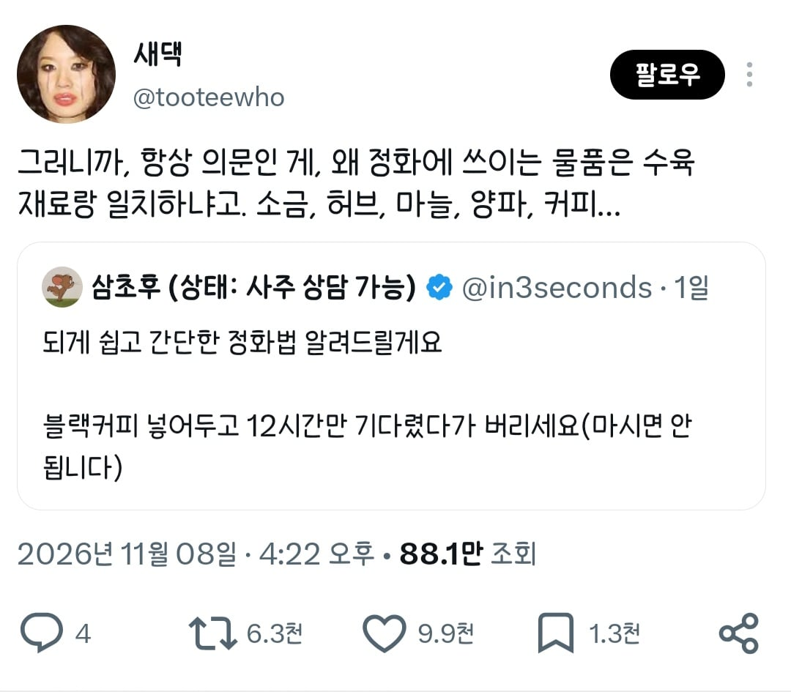
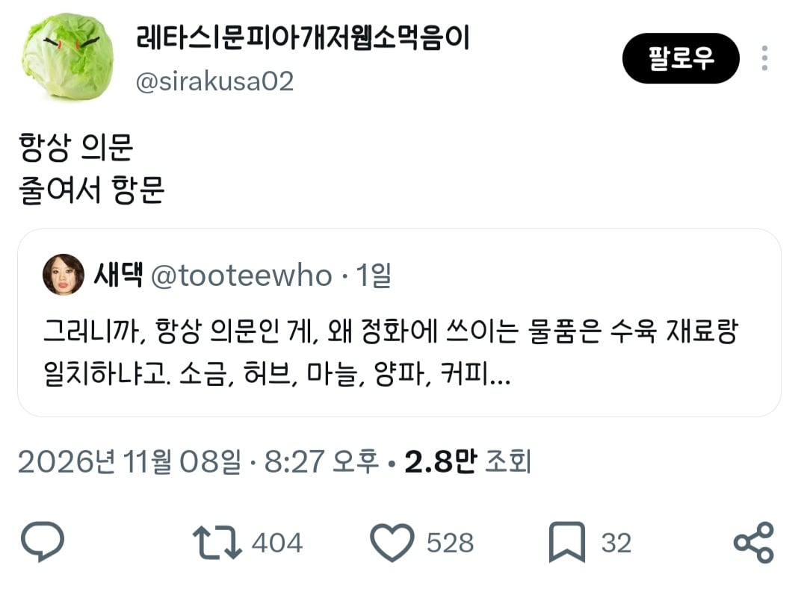

본문에 언급은 안 됐지만 술 뿌리는 것도 정화의식인데 이것도 돼지 잡내 잡는다고 수육에 넣음 ㄷㄷ
+) 사족


본문에 언급은 안 됐지만 술 뿌리는 것도 정화의식인데 이것도 돼지 잡내 잡는다고 수육에 넣음 ㄷㄷ
+) 사족

요리라는게 사실 기생충 세균 잡내 등 식재료의 나쁜 기운을 정화하는 과정이거덩요
여기서 끝이 아니다?!
잡귀랑 잡내가 같은 잡씨 집안이라 쫓아내는 재료도 같은 듯
항~~시!!
항~~~~~~~~시!!!!!!!
나만 제목보고 항문으로 알고 들어온게 아니었어!
성수라고 팔던것도 결국 소금물이라며 ㅋㅋㅋㅋㅋ
과학적 원리 설명하면 지루하고 현학적이니 성스러운 물이 다 해결해줘요 라고 하기ㅋㅋ
꼭 들러붙어서 사족다는 혼돈의 인도자가 있지ㅋㅋㅋㅋㅋㅋ
인간을 양념하는 거지
진지빨자면 나쁜 냄새는 곧 질병이고 곧 나쁜 기운이자 악령이라는 인식과 결을 같이 하는 듯
해병수육
We are the pigs~
수육 정화 ㅋㅋ
축성된 수육+12
잡내정화하는거 아니었음?
저렴하고 주변에서 구하기 쉬운 재료만 나열하니까 그렇지.
원래 정화의식엔 은탄이 제일 효과좋음
화포아님?
항문인데 귀신을 쫓으려면 수육을 끼리면 되나
귀신이 다 돼진가봐!
수육이 정화를 거치지않고는 입도 댈 수 없는 사특하고 요사스런 음식임을 모른단 말이가
잡귀 제거
ㄹㅇ 사족이네 시발 ㅋㅋㅋㅋㅋㅋ